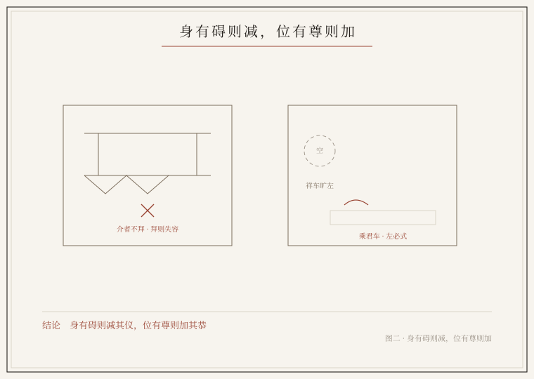

曲礼上 · 一·一百二十二 · 第 120 课
披甲的人不行拜礼，因为一拜就失了容节。祥车空着左边的尊位；臣乘君之车，不敢空左，居左则必凭式。
说什么事：介者不拜，为其拜而蓌拜。祥车旷左，乘君之乘车不敢旷左；左必式。
落在哪一层：仪，兼及礼意。讲的是「甲与位」两件事如何改礼。
为何编在此位：上节论迎命之敬，此节论敬在身与敬在位。身有碍则减礼，位有尊则加礼。
【经】介者不拜，為其拜而蓌拜。祥車曠左；乘君之乘車，不敢曠左，左必式。
【注】蓌則失容節，蓌猶詐也。空神位也。祥車，葬之乘車。君存，惡空其位。
介 疏「介，甲铠也。著铠者不为式敬，故宜无所拜之也」。
蓌 注「蓌则失容节，蓌犹诈也」。疏「蓌，挫也。戎容暨暨，著甲而屈拜，则坐损其戎威之容也。一云蓌，诈也……虚作矫蓌，则失容节」。
祥车 注「葬之乘车」。疏「祥犹吉也，吉车为平生时所乘也。死葬时因为魂车，鬼神尚吉，故葬魂乘吉车也」。
旷左 疏「旷，空也。车上贵左，故仆在右，空左以拟神也」。
乘车 疏「谓君之次路也。王者五路，玉、象、木、金、革各一路。王自乘一，所余四路，皆从行。臣若乘此车，不敢空左」。
左必式 疏「虽处左而不敢自安，故恒冯式」。
披甲的人不行拜礼，因为勉强一拜，反失容节。祥车空着左边的尊位；臣乘君之车，不敢空左，居左则必凭式。
两件事，一个理：礼要看身与位。甲在身，拜则失容，故免拜；神在位，左当空，故空左。同一套礼，遇到具体的身与位，就有加减。
第一层 介者不拜 不是不敬，是敬不了。疏说得直：「著甲而屈拜，则坐损其戎威之容。」行礼而行坏，不如不行。
第二层 蓌犹诈 注又下一转语：硬拜下去，形仪不足，看起来像作假。这个观察极锐——不合身的礼，会变成伪。
第三层 祥车旷左 注「空神位也」。车上贵左，左位留给不在的人。虚位以待，是礼里最静的一种敬。
第四层 不敢旷左 君在，则左不可空。空左便似祥车，近于凶。故臣居左而必式：占了位，就得更恭。
与今日何干 同样的礼，对不同处境的人要留出余量；而占了尊位的人，姿态要更低。
| 左 | 右 |
|---|---|
| 介者不拜 | 著甲屈拜，损戎威之容 |
| 为其拜而蓌拜 | 蓌则失容节，蓌犹诈也 |
| 祥车旷左 | 魂车空左，以拟神 |
| 不敢旷左 | 君存，恶空其位 |
| 左必式 | 居尊位而不敢自安 |
画车箱的俯视轮廓两个，并置：左一车，左位空着、空处画一道淡淡的虚线圈；右一车，左位有一处凭式的下压弧线、无人形。两车之间一道细线相隔。车箱外另画一副甲片的极小剪影，甲片边缘有一处弯折、示意屈拜之形。不画人、不写文字。赭色只用在右车那道下压弧线上。
